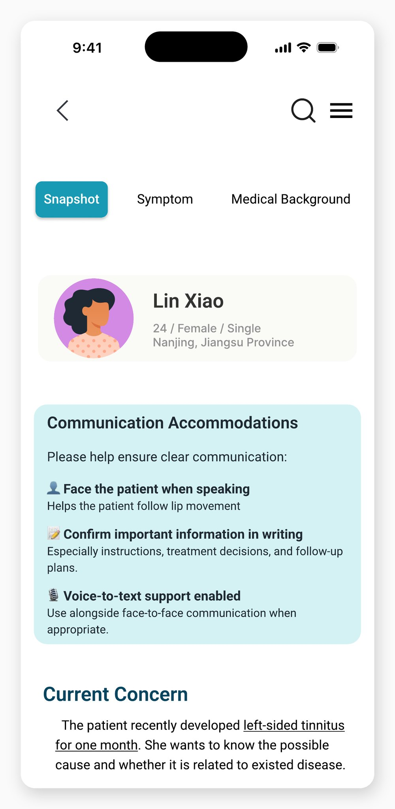
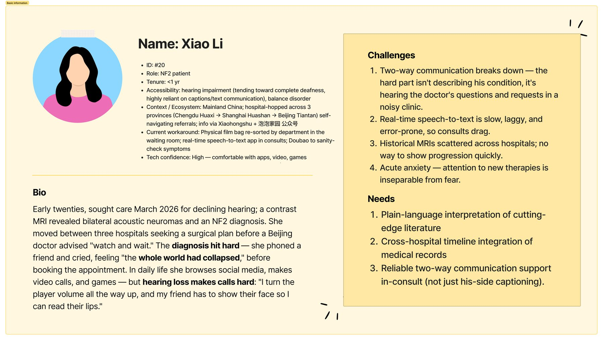
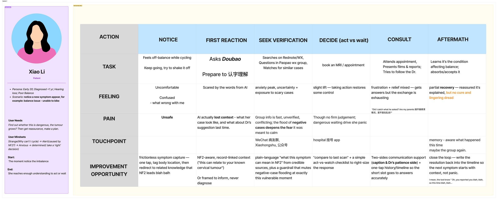
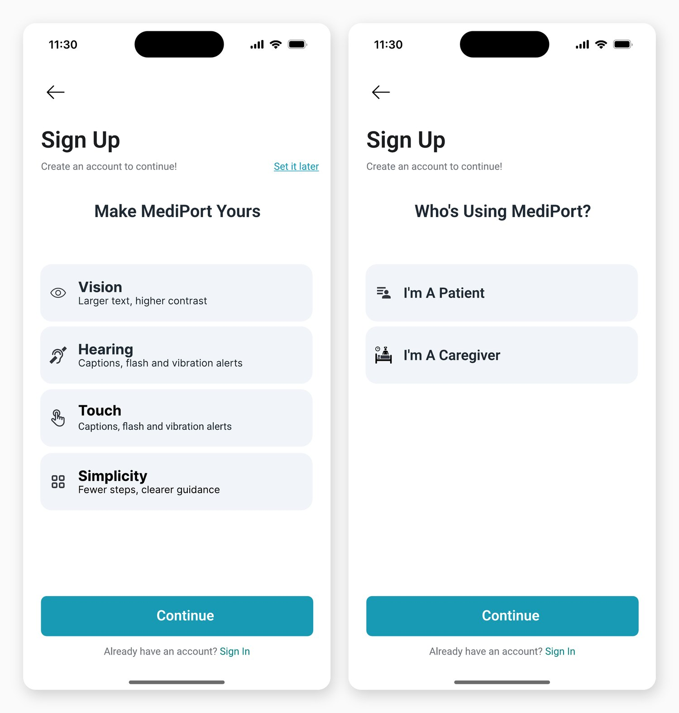
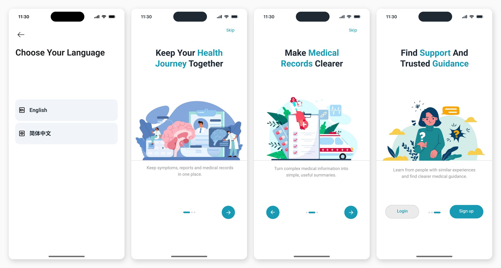
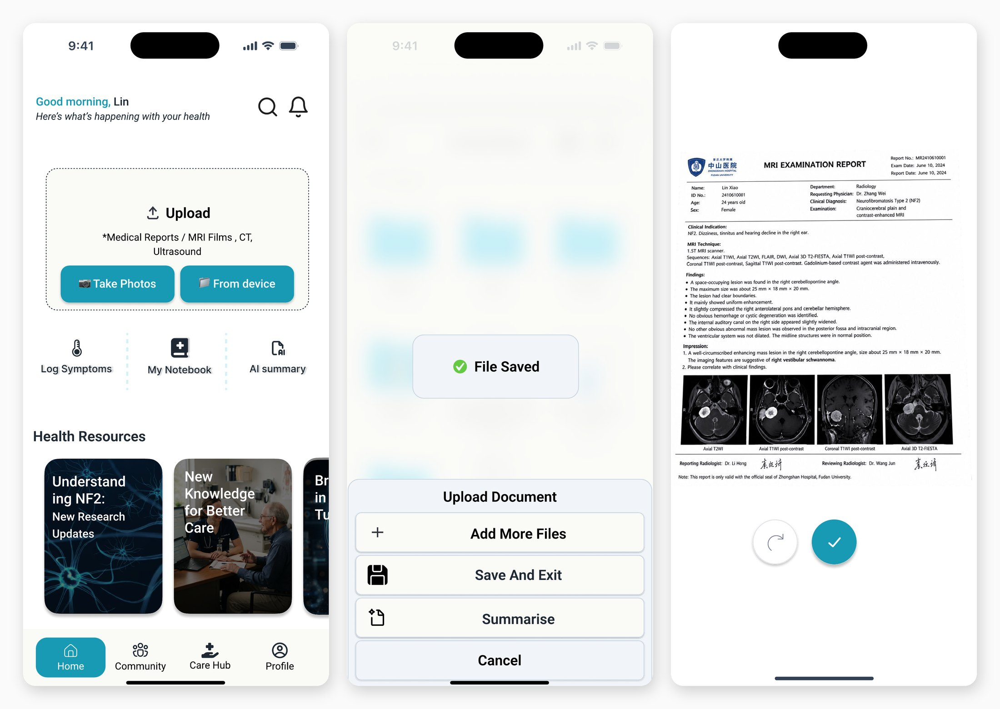
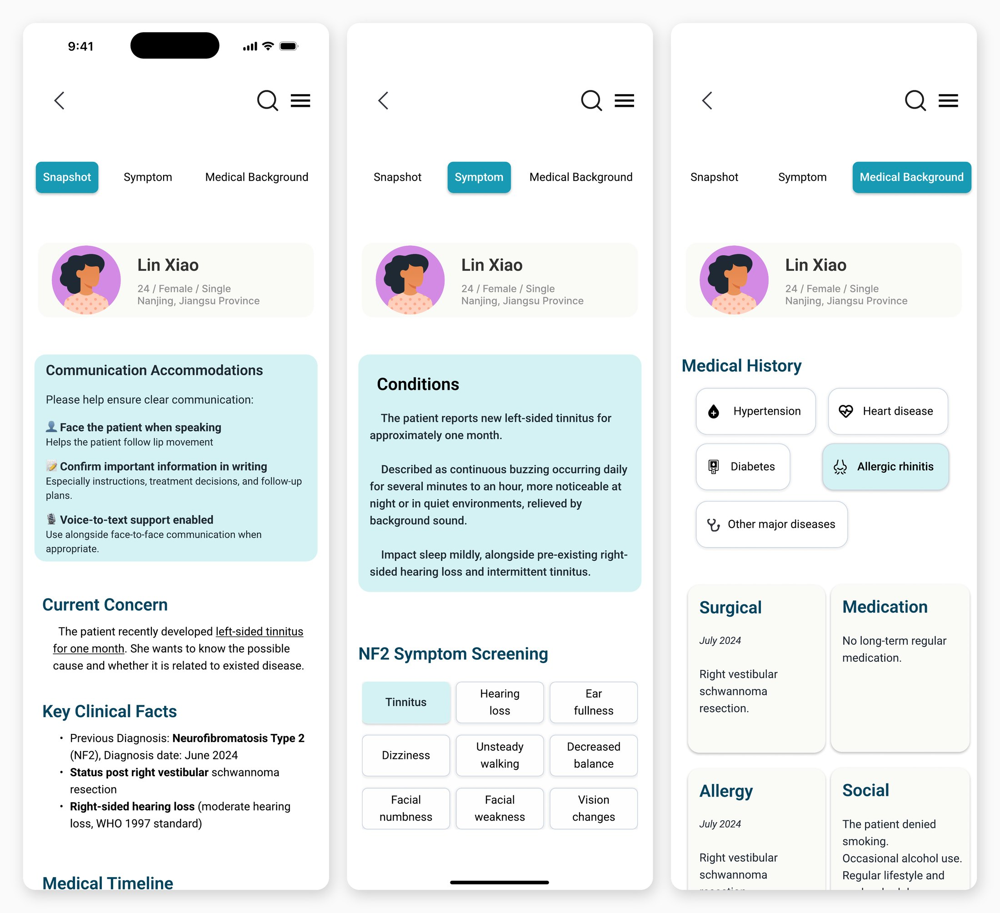
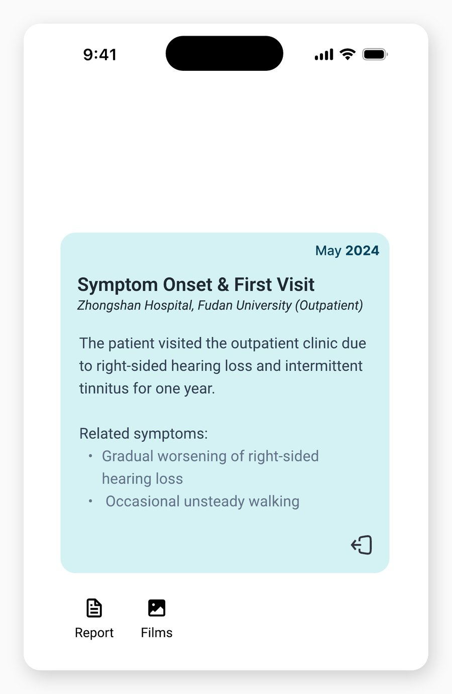
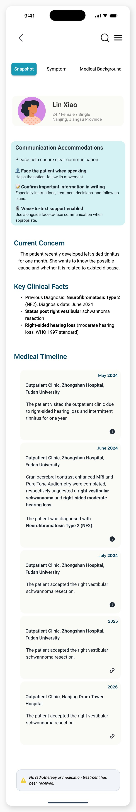
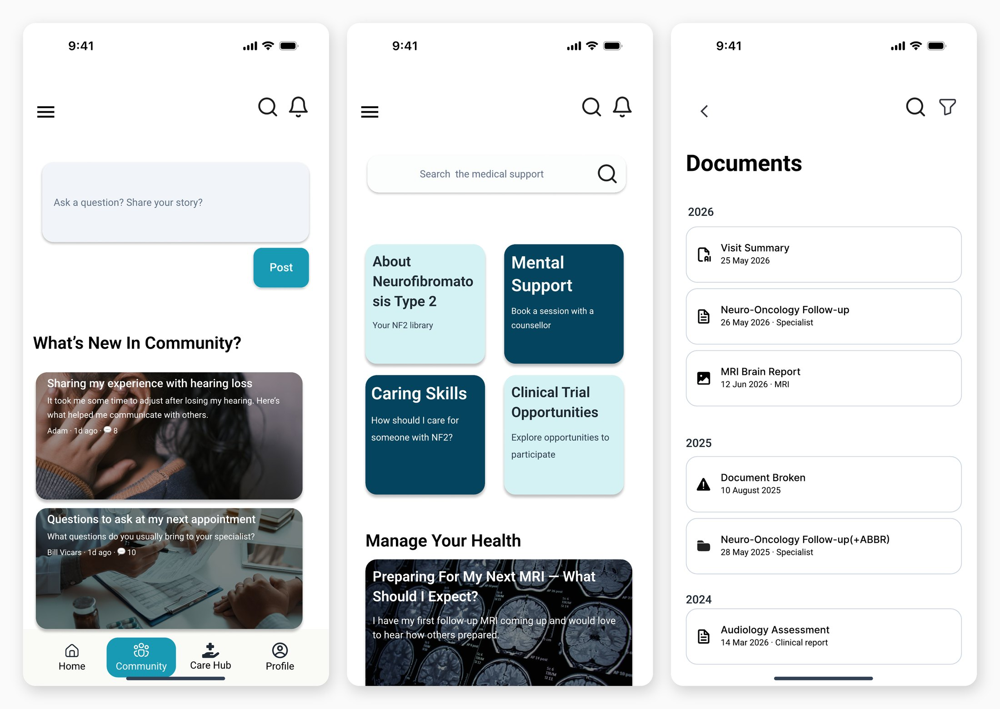

MediPort
A patient-owned disease timeline and consultation summary for people living with Neurofibromatosis Type 2.
NF2 care is lifelong, multi-hospital, and often crosses provinces — and the disease progressively takes away the hearing the consultation depends on. This project reframed that from a record-storage problem into an information-transmission one, and designed the artefact that carries a decade of history into a ten-minute appointment.
- My role
- Project lead · product & experience design · user research
- Team
- CareLink Lab — 3 people (design, accessibility review, medical content)
- Context
- PwC Inclusive Future Lab, Cohort 6 · 6 weeks, Jul–Aug 2026
- Output
- 31 high-fidelity frames · clickable prototype · research & design system

The patient is the only continuous record.
Neurofibromatosis Type 2 is a rare disorder that produces tumours on the nerves of the brain and spine. Care is lifelong and multidisciplinary, and clinical decisions depend less on any single record than on change across serial MRI scans over years. The longitudinal history is the diagnosis.
In China there is no dedicated national NF2 centre. Patients move between institutions and provinces, and hospital information systems do not talk to each other. The continuity nobody owns institutionally is therefore carried by the patient — in a bag of films, in paper reports, and in memory.
Progressive hearing loss is a defining feature of NF2. So the person responsible for transmitting years of medical history is doing it in a noisy room, under time pressure, through a channel the disease itself is closing.
My role, and where my own perspective sat
I led the project and owned research end to end: survey design and analysis, the interviews, the point-of-view workshop, persona reduction and problem statements, and co-development of the information architecture, user flows, design system and high-fidelity prototype. I worked with two teammates who covered accessibility review and medical content.
I also have NF2 and I am deaf. That is not the headline of this project — it is a research instrument. It let me recruit inside a patient community that does not open to outside designers, phrase questions in language that did not read as clinical or extractive, and pressure-test the consultation scenario against something I do myself several times a year. Where it created bias, I have said so.
From storage to transmission.
We began where most health-record products begin: people lose their documents, so build them a place to put documents. The research did not support it. Patients mostly had their records. The information existed — trapped in paper, in films, in incompatible hospital systems, or in one person's recall — and then had to be rebuilt out loud, from scratch, in a ten-minute consult.
That moved the design context from the archive to the appointment.
People with NF2 in China must compress a longitudinal, multi-institutional medical history into a short consultation — sometimes through a communication channel the disease itself is progressively impairing. The information exists, but there is no patient-owned artefact that can reliably carry it into the clinical conversation.
How might we help patients own, carry, and communicate their longitudinal medical history across institutions within seconds, without relying on hearing?
Framing it this way had one consequence that shaped everything after: accessibility stopped being a compliance pass at the end and became the product requirement itself. If the artefact cannot be operated and read by someone who cannot hear, it has not solved the problem it was built for.
38 survey responses, four interviews, and one broken assumption.
I ran a survey in a Chinese NF2 patient community from 28 June to 6 July 2026 (n = 38 valid responses), then four semi-structured asynchronous text interviews with two patients and two caregivers. For a disease with this prevalence, 38 is a meaningful sample — but it is still 38. I have not claimed significance anywhere, and the interviews are treated as pattern-generating, not confirmatory.
Also: 65.8% rely on paper records and MRI films, 34.2% have no systematic method at all, and 89.5% have been diagnosed for three or more years — so these are settled practices, not the confusion of a new diagnosis. Beyond hearing: 39.5% motor difficulty, 39.5% balance difficulty, 28.9% vision impairment.
The assumption that broke
I went in believing record chaos grows with the length of the history. A live retrieval task in the interviews — find me the date and side of your last surgery, now — broke that cleanly. A patient of ten-plus years answered from memory in about a second. A caregiver of ten-plus years could not answer at all without going to dig through materials.
Pain does not scale with disease duration. It scales with proxy distance. Patients live in the body and compress its history into memory; caregivers manage someone else's body, often with the records and the retrieval living in two different people's heads. The highest-pain user is not "the NF2 patient" — it is the person who has to externalise a history they did not experience.
What the interviews found that the survey could not
In all four interviews, a hearing family member had at some point acted as the communication bridge. One participant put the cost of that plainly:
“I feel doctors are unwilling to communicate with me directly.”
Patient, 10+ years since diagnosis — interview #38
This changed what the summary screen was for. Up to that point I had scoped it as a time-saving device. It is better understood as an accessibility mechanism: a shared artefact both people can point at restores a direct patient–clinician exchange that a relay person quietly removes.
Two design mandates came out of the interviews that the original five-screen concept did not satisfy. First, provenance: two of four users said they would personally audit the summary, so every claim has to link back to its source document. Second, paraphrase must be visible as a choice, because paraphrase is exactly where the trust objections lived.
Four personas down to one primary, one secondary, and one anti-persona.
We converged four research personas into a primary caregiver-proxy, a secondary deaf self-navigating patient, and — deliberately — an anti-persona: the long-diagnosed, highly capable patient who does not need this product and said so. He does not get a problem statement. He generates constraints.


She needs to reconstruct and communicate her child's disease progression within a few minutes, because consultations are short, records are scattered across people and institutions, and critical information is easily missed under time pressure.
She needs to communicate her history and respond confidently during consultations without relying on hearing or on a family member, because the relay costs her both consultation efficiency and ownership of her own care.
Her stated kill-switch is worth recording, because it set an engineering constraint the design had to respect: one error that reverses a trend and she abandons the tool permanently. A summary that is confidently wrong about whether a tumour grew is worse than no summary.
Accessibility comes before the account.
The clearest decision in the product is also the smallest: the accessibility profile is configured before registration, not buried in settings afterwards.
The reasoning is direct. If 86.8% of your users have at least one impairment that affects how they use the interface, then asking them to navigate an unadapted sign-up flow first — in order to reach the controls that would have adapted it — is a design error. Four dimensions: vision (larger text, higher contrast), hearing (captions, flash and vibration alerts), touch (larger targets, tolerance for tremor), and simplicity (fewer steps, clearer guidance).


Capture has to be camera-first
The primary action on Home is Upload — photograph a report or import a file. This follows the caregiver evidence: the record enters the system as a photo of a piece of paper in a waiting room, because that is when it is in your hand. Organising it later is the product's job, not the user's.

The consultation summary: three tabs, one argument
The summary is organised the way a clinician orients to a patient, not the way a hospital files records: Snapshot (who this is, how to talk to them, what changed, the timeline), Symptom (the current complaint plus structured NF2 symptom screening), and Medical Background (history, surgical, medication, allergy, family).
The Communication Accommodations card sits above the clinical content on purpose. It is the one piece of information that changes the next ten minutes for everyone in the room, and it is the piece a patient who cannot hear is least able to deliver verbally.

Every claim keeps its receipt
Timeline entries carry Report and Films attachments, so a clinician who wants the actual radiology — or a caregiver auditing the summary before the appointment — is one tap from the source. This is the provenance mandate from the interviews, made concrete. It is also the honest answer to "why not just ask a general AI": a chat window does not hold structured, sourced, longitudinal data across years.


Walkthrough.
The clickable prototype end to end: first launch, accessibility setup, record capture, and the consultation summary.
What I cut, and why.
The application that won the place pitched AI medical-record ingestion as the core innovation. Six weeks in, I moved it to the roadmap. Below is the honest difference between what was proposed and what shipped.
| As submitted | As executed | Why |
|---|---|---|
| AI medical-record ingestion as the core innovation | Roadmap capability; not implemented in the prototype | Reliable extraction could not be validated against real medical records in six weeks. Shipping an unvalidated parser into a product whose users audit every number would have failed on its own terms. |
| Community, research digest and health-record modules | Static concept cards and roadmap items | Narrowing scope let us deepen the one pathway that carried the thesis. |
| Five core screens | 31 high-fidelity frames | A realistic end-to-end experience needed onboarding, accessibility setup, capture, and the three-tab summary. The original five described a demo, not a product. |
One cut I want to defend properly
A patient-community feature is the obvious thing to build for a rare disease, and the research is exactly why we did not. In one interview, a caregiver had treated a child's sudden hearing drop with medication recommended by group members and bought over the counter. Another respondent described group advice as "unverified or conflicting."
A community or medication-log feature that ingested that uncritically would launder unverified advice into official-looking UI. It stays a concept card. If it ships later, it ships with an explicit unverified-information boundary, and the legitimate version of the underlying need is closer to clinical-trial access than to a discussion board.

What it does, and what I still can't claim.
The project delivered a 31-frame clickable prototype covering first launch through consultation preparation, alongside the research reports, personas, journey and empathy maps, problem statements, information architecture, user flows, design-system components and accessibility criteria that produced it.
The limits, stated plainly
This is concept validation. The prototype has not been released clinically; there is no real-world usage or outcome data; formal usability testing and clinical validation are still ahead. So the claims stop at two things: the research documents and quantifies a problem that was previously anecdotal, and the prototype demonstrates a coherent, accessible, clinically credible response to it.
The critique I did not design around
The most useful hour of the whole project was an interviewee dismantling the concept. His argument: hospital films are already going to the cloud, so re-solving film-carrying is late; and general-purpose LLMs are improving fast enough that a wrapper around summarisation gets crushed — "why wouldn't I just use the LLM directly?"
He is right that "AI summary" is not a defensible differentiator. What survives the critique is narrower and more honest: structured longitudinal data with provenance, plus accessibility-first consultation interaction. A chat window does not hold that across years; a cloud-film QR code does not organise it. I would rather publish the version of this project that has absorbed that argument than the version that avoided it.
Worth noting he was also the participant with the least pain — stable disease, solo, perfect recall. The anti-persona rejecting a product built for proxies is the expected result, not a fatal one. But "the skeptic isn't our user" is a comfortable sentence, and I did not want to use it to avoid the substance.
What I would do next
- Moderated usability testing with caregiver-proxies specifically, since they are the primary persona and the hardest to recruit.
- Re-cut the survey by role to test the proxy-distance finding against n = 38 rather than n = 4.
- Test the summary with clinicians, not only patients — the artefact has two readers and I have only researched one of them.
- Prototype the provenance interaction under time pressure: can a clinician actually get from a claim to its source film fast enough to bother?
What I took from it
I came into this from data science, and the habit that transferred best was refusing to let a number stand without asking what decision it changes. The habit I had to build was the opposite one: sitting with four contradictory interviews long enough to find the structure underneath, instead of reaching for the sample size that would have made the contradiction go away.